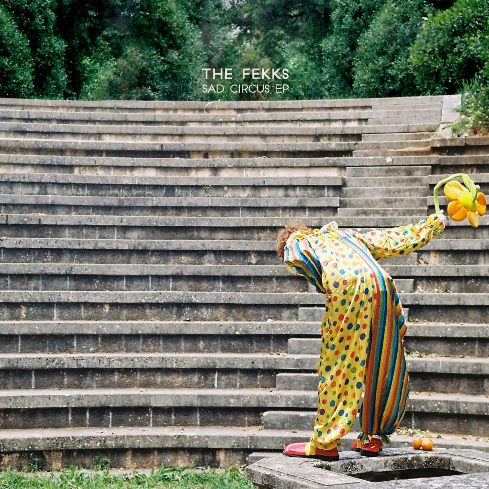

The Fekks came together in 2009 among schoolmates united by common musical tastes. In 2012 they debuted with the release of ‘Retrospectator’, a small sample of the band’s first works - a sound that reflects the influences of alternative rock, indie, and synth folk that initially united the band. With the departure to university, however, the members distanced themselves, but continued to record and write music with every opportunity they had.
In 2018, with the band constituted by Aran, Francisco and Christopher, The Fekks released their first EP, ‘Sad Circus’, an album recorded in the band's DIY studio, affectionately dubbed Trap Door Studios. In 2019 Bernardo joined on bass, and Marcelino on drums. The band then participated in the artistic residence in Escola do Rock, and thus The Fekks returned to the stage with a mini-tour throughout the most beloved locations and venues of Paredes de Coura.
The band is now in rehearsals, preparing new projects and ready for their public debut in full format.
“Outside Dog” – Sad Circus (2018)
“Bluff Pays Off” (2017)
Reflections on regret, fear, apathy, hypocrisy, excuses, and dogs with existential concerns The Fekk’s debut EP, ‘Sad Circus’, is now available on all streaming platforms
O Bom o Mau e O Vilão – Lisbon
Má Língua – Lisbon
Faculdade de Ciências Sociais e Humanas – Lisbon
Meia Volta a Úrano – Cacilhas
Arroz Estúdios – Cacilhas
Caixa da Música – Paredes de Coura
thefekks@gmail.com